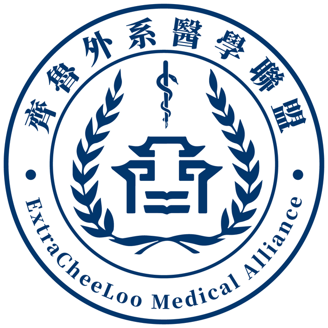

汤松燃
联合发起人 · 会长
男，山东大学基础医学院齐鲁医学堂 2024 级学生。齐鲁外系医学联盟联合发起人，现任联盟会长。山东大学一等学业奖学金获得者。

ExtraCheeLoo Medical Alliance
EST.2025
About the alliance
齐鲁外系医学联盟（ExtraCheeLoo Medical Alliance，ECLMA）成立于 2025 年，由山东大学基础医学院齐鲁医学堂 2024 级四位学生联合发起。
Members
联合发起人 · 会长
男，山东大学基础医学院齐鲁医学堂 2024 级学生。齐鲁外系医学联盟联合发起人，现任联盟会长。山东大学一等学业奖学金获得者。
联合发起人
男，山东大学基础医学院齐鲁医学堂 2024 级学生。齐鲁外系医学联盟联合发起人，齐鲁班解剖学专家、齐鲁班解剖学大满贯获得者。
代表学术成果：Gut Microbiota Mediates the Protective Effect of Saposhnikovia divaricata Polysaccharides against Ovalbumin-induced Allergic Asthma（J Physiol Investig, 2026）。
联合发起人
男，山东大学基础医学院齐鲁医学堂 2024 级学生。齐鲁外系医学联盟联合发起人，山东大学学生 Phantastics 音乐剧社部长。
联合发起人
男，山东大学基础医学院齐鲁医学堂 2024 级学生。齐鲁外系医学联盟联合发起人。